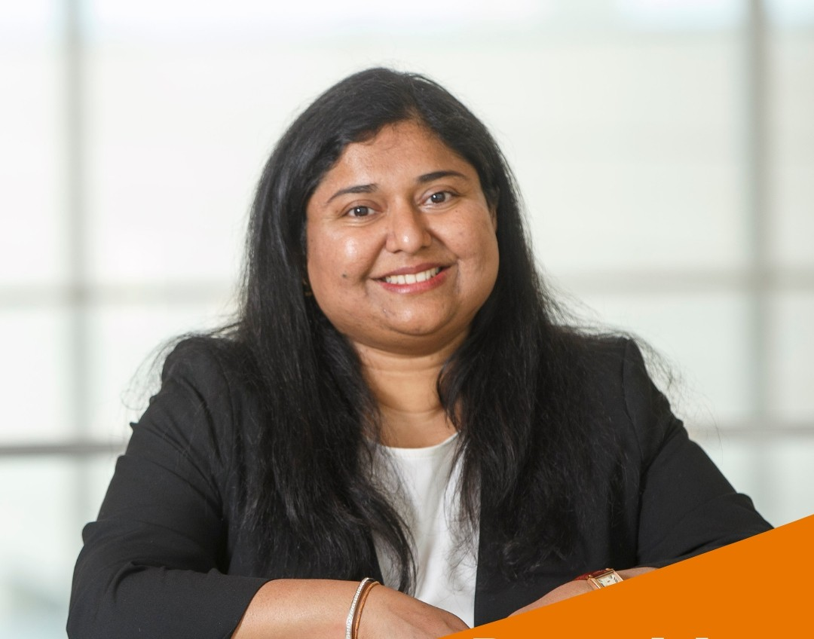
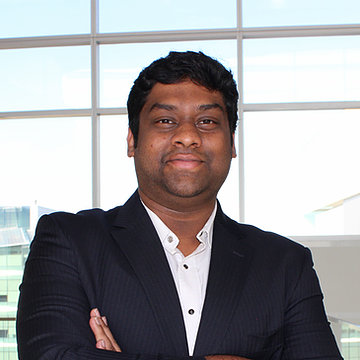
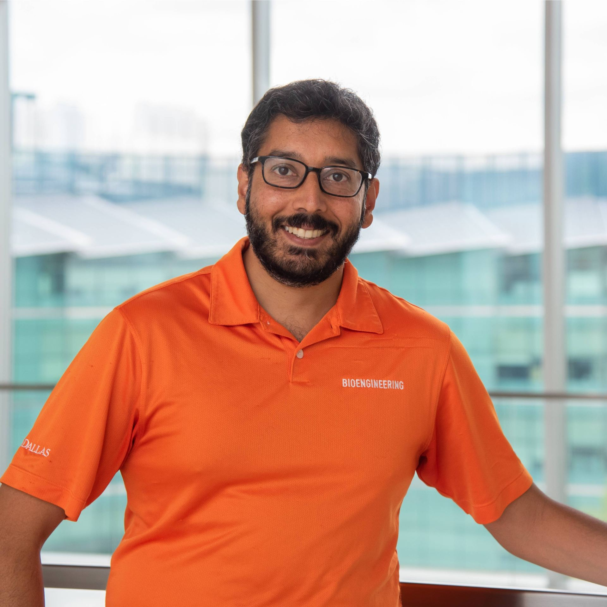
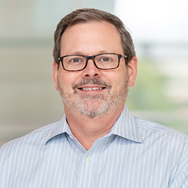

About Me
I am a PhD Candidate in Bioengineering at The University of Texas at Dallas, where I work on electrochemical biosensors, assay development, microfluidics, microbiology, and translational sensing platforms for food, environmental, and health applications. I am advised by Dr. Shalini Prasad.
My current research focuses on multiplexed electrochemical impedance spectroscopy (EIS) biosensors for simultaneous detection of antibiotics, pesticides, pathogens, and toxins in complex matrices. I work across the full pipeline, including sensor design, screen printing, functionalization, assay optimization, electrochemical testing, and validation in real-world matrices such as chicken, shrimp, milk, salad, water, and agricultural soil runoff.
Before joining UT Dallas, I worked as a Junior Research Fellow at IIT Delhi, contributing to microfluidic lab-on-a-chip nanobiosensors and non-silicon nano-fabrication research through the NNetRA program. I also served as a Research Associate at Virtual Sense Global Technologies, where I worked on breath-based biomarker sensing, nanomaterial functionalization, gas sensing systems, 3D prototyping, and clinical study workflows.
Research Interests
Primary
- Electrochemical biosensors
- Electrochemical impedance spectroscopy (EIS)
- Food safety diagnostics
- Pathogen, toxin, pesticide, and antibiotic detection
- Sensor fabrication and screen printing
- Microfluidic lab-on-a-chip systems
Secondary
- Assay development
- Portable and point-of-care sensing platforms
- Cleanroom microfabrication
- Microbiology and bacterial culture handling
- Wearable and translational diagnostics
Highlights
- PhD in Bioengineering, The University of Texas at Dallas (GPA: 4.0/4.0)
- Developed intelligent multiplexed EIS biosensors for food and environmental sensing
- Published work in Biosensors, Biosensors and Bioelectronics, Food Analytical Methods, and related venues
- ECS Jonsson Family Bioengineering Graduate Fellowship (2024–2025)
- Convergence Grant 2025, ECS Fall 2025 Travel Award, and BMES 2025 Travel Grant
UT Dallas Feature Video
Watch: UT Dallas: Momentum Is Our HallmarkSupervisor

Collaborators & Mentors



Undergraduate Researchers Mentored
As part of my research and leadership role, I mentor undergraduate students working on electrochemical biosensors, food safety diagnostics, pathogen detection, pesticide screening, mycotoxin detection, antibiotic residue monitoring, portable sensing hardware, and AI-based electrochemical data analysis.
- Abhinav Kokala, Undergraduate Neuroscience Student, The University of Texas at Dallas, research focus: portable electrochemical biosensing for foodborne mycotoxins including Aflatoxin B1 and Zearalenone in food matrices. Current position: UT Health San Antonio Long School of Medicine.
- Chesna Jophy, Undergraduate Research Assistant, Neuroscience, The University of Texas at Dallas, research focus: biosensor-based detection of foodborne pathogens including E. coli O157:H7 and Salmonella for rapid contamination monitoring in food safety applications.
- Krupa M. Thakker, Undergraduate Research Assistant, Neuroscience, The University of Texas at Dallas, research focus: food safety biosensing platforms for pesticide residue detection including Glyphosate and Atrazine, supporting agricultural, environmental, and food quality monitoring.
- Jahnvi Shree Raj, Undergraduate Research Assistant, Biology, The University of Texas at Dallas, research focus: electrochemical biosensor development for pathogen detection, particularly Salmonella and E. coli O157:H7, to support contamination prevention and public health monitoring.
- Yesh Harkara, Undergraduate Research Assistant, Neuroscience, The University of Texas at Dallas, research focus: sensor design, COMSOL-based simulation, and electrochemical biosensor optimization for improving foodborne pathogen detection and sensor performance.
- Shanmathi Venkatesan, Undergraduate Research Assistant, Biology, The University of Texas at Dallas, research focus: biosensing platforms for pesticide and herbicide detection including Paraquat, Diquat, and Chlorpyrifos for rapid food and environmental safety testing.
- Aysha Mahmood, Undergraduate Research Assistant, Biology, The University of Texas at Dallas, research focus: electrochemical biosensing for foodborne pathogens including E. coli O157:H7 and Salmonella, supporting rapid detection strategies for preventing food contamination.
- Medha Yashika Nyalakonda, Undergraduate Research Assistant, Neuroscience, The University of Texas at Dallas, research focus: electrochemical biosensor development for mycotoxin detection, particularly Aflatoxin M1 and Aflatoxin B1 for food and dairy safety monitoring.
- Yasmin Garada, Undergraduate Research Assistant, Neuroscience, The University of Texas at Dallas, research focus: biosensor development for antibiotic residue detection, including nitrofuran metabolites such as AOZ and AMOZ, for rapid food safety screening.
- Sarah Basepogu, Undergraduate Research Assistant, Neuroscience, The University of Texas at Dallas, research focus: portable electrochemical detection of nitrofuran antibiotic metabolites including Semicarbazide (SC) and 1-Aminohydantoin (ADH) for residue monitoring in food safety applications.
- Divya Krishna Narayan, Undergraduate Research Assistant, Neuroscience, The University of Texas at Dallas, research focus: AI-based electrochemical data analysis, machine learning classification, and decision-support tools for pathogen, pesticide, mycotoxin, and antibiotic detection.
- Alondra Sarahi Lopez, Undergraduate Research Assistant, Neuroscience, The University of Texas at Dallas, research focus: pesticide detection using electrochemical sensing platforms, with emphasis on Atrazine, Glyphosate, and Chlorpyrifos for food and environmental monitoring.
- Joseph Charles Khavul, Undergraduate Research Assistant, research focus: development of a portable electrochemical sensing platform for impedance spectroscopy-based biosensing using an ARM-based microcontroller to support compact, field-deployable food safety and biosensor applications.
- Shashwat Singh, Undergraduate Research Assistant, The University of Texas at Dallas, research focus: sensor surface functionalization, assay preparation, and electrochemical biosensor testing for rapid detection of food safety targets, including pathogens and mycotoxins in complex sample matrices.
- Brandon Phan, Undergraduate Research Assistant, The University of Texas at Dallas, research focus: electrochemical assay optimization and validation for pesticide residue screening, including Glyphosate, Atrazine, Paraquat, Diquat, and Chlorpyrifos in food and environmental monitoring applications.
- Sri Sai Tummala, Undergraduate Research Assistant, The University of Texas at Dallas, research focus: biosensor data organization, EIS/CV/coulometry analysis, and machine learning-supported interpretation of electrochemical signals for antibiotic, pathogen, pesticide, and mycotoxin detection.